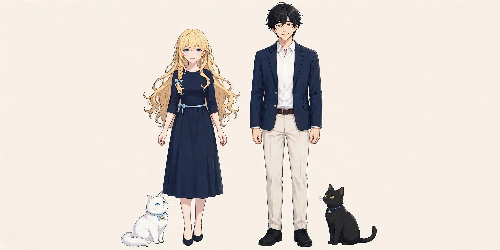

40代メンズ 清潔感シャツの選び方

ケント：シャツの清潔感は、色・素材・サイズ・シワの4点です。買い替えの前に、今のシャツのチェックからどうぞ。
色と素材：汗が目立ちにくいものを
汗ジミが目立ちやすいのは薄いグレーと水色です。紺・濃いグレー・白（柄入り）は比較的目立ちにくく、吸汗速乾の素材だと乾きも早くなります。
サイズ：首まわりと丈
- 首まわり：ボタンを留めて指が1〜2本入るくらい
- 着丈：パンツに入れて腕を上げても出てこない長さ
- 肩：肩の縫い目が肩先に合っているか（落ちるとだらしなく見えます）
シワ対策
形態安定（ノーアイロン）表記のものを選ぶと、洗濯後の手間が減ります。干すときに襟と前立てを整えるだけでも仕上がりが変わります。
姿勢も清潔感の一部
猫背だとシャツの前が余って見えます。壁を使った姿勢チェックはペア記事でも紹介しています。
PR：この記事のテーマに合うシャツ（PR）


あわせて読みたい：メンズトップス種類別ガイド